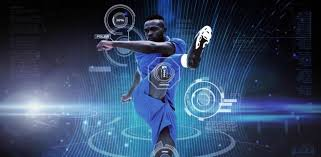

DEPORTES
Sebastian Vettel desvela detallesF1Sebastian Vettel puede hacer un 'Fernando Alonso'. El alemán, que ha vuelto a probar esa sensación de velocidad en un coche gracias a Porsche en Aragón... |
Subcampeón en CrisisFútbol
Cobresal, el último subcampeón de la Primera División del fútbol chileno, no vive un buen presente. El equipo minero cayó por 0-2 ante Palestino... |
La Tecnología en el DeporteTec y DeportesLa tecnología es fundamental para poder incrementar la repercusión del deporte al aumentar las posibilidades de interacción entre los aficionados... |